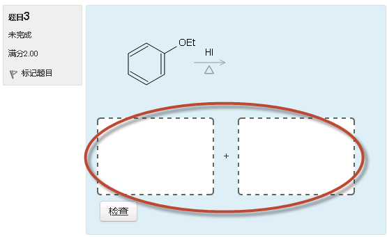
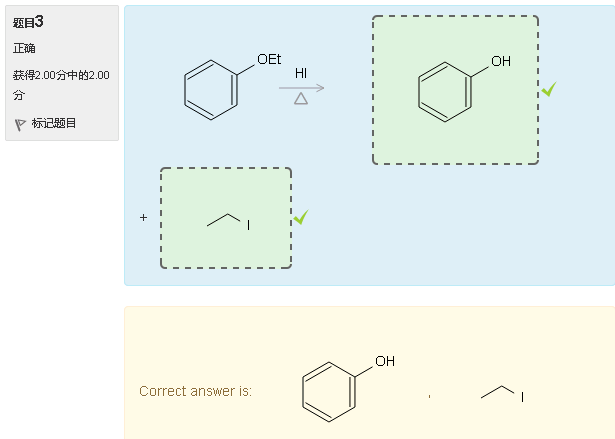

在线习题系统说明
准备工作
在线习题系统需登录后方可使用。用户名与初始密码为诸位同学的学号（如15405122）。首次登录后，请务必修改自己的密码。
开始测试
而后请点击“现在参加测验”开始答题：
每个页面显示一道问题，可点击下方的“上/下一页”按钮或左侧的导航在不同问题中切换。
不同题型具有不同的答题界面。如上图中的单项选择题，点击选项前单选按钮选出正确的项目即可。
而命名题，需在输入框内输入正确的系统命名：
反应式题与结构推断题，需要在空白处输入分子结构：

上图中反应将生成一对主要产品，因而有两个空格，需分别输入两个分子。
而合成、反应机理等题型，需要输入一系列的反应式：

对于这些需要输入化学结构的问题，将鼠标悬停在空白处，或单击空白处将显示“编辑”按钮，点击后会弹出化学编辑器对话框。关于化学编辑器的具体使用方法，请参看此处的介绍。
自动评判
一道题答完后，若想当即得知正确与否，可点击题干下方的“检查”按钮。若该题可自动评判（如命名、选择、反应式、结构推断等题型），则将立即显示本题评判与得分情况：

注意，此处由于是测试练习，因而正确答案也会当场显示。实际各章节练习中答案将在一段时间后（测试关闭后）开放。
当然，也以不点击“检查”按钮，待答题全部结束后再评判所有题目。
完成答题
全部答题完成后，请在最后一页点击“结束答题”按钮：
此时会显示答题情况报告页面，列出整个测试的完成情况：
点击“返回试题”，可继续进行答题。点击最下方的“提交所有答案并结束”将最终结束答题。随后的总结页上将列出全部题目的自动评判结果及此次答题的最终得分：
其中，合成、机理之类无法自动评判的题目未计入总得分。这类题型将由教师在后台评阅后人工打分，因而此处的总成绩在教师批改后可能会发生变化。